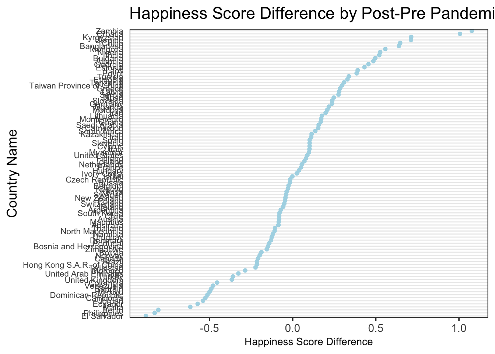

Chapter 1 Results
1.2 General Life Ladder Trend
1.2.1 Trend by Time
- Alluvium data transformation
library(ggalluvial)
allu <- read.csv("2015-2020.csv")
allu <- allu %>% mutate(Rank = factor(Rank, levels = c(1:50)))
ggplot(allu, aes(alluvium = Country.name, x = year, stratum = Rank, fill = Region)) +
geom_alluvium(color = "blue") +
geom_stratum(color = "black", fill = "light grey") +
scale_fill_brewer(type = "qual", palette = "Paired") +
geom_text(stat = "stratum", aes(label = paste(after_stat(stratum)))) +
ggtitle("Happiness Score Rank Movements")+
geom_flow(stat = "alluvium", color = "black")
1.2.2 Trend by Geo
1.2.3 Trend by Development Level
1.3 COVID-19 Impact
ave1719 <- read.csv("17_19_sample.csv")
averaged <- ave1719 %>% group_by(Country.name) %>% summarise(score_1719 = mean(Life.Ladder)) %>% ungroup()
score_2020 <- read.csv("2020_sample.csv")
temp_col <- score_2020$Life.Ladder[match(averaged$Country.name, score_2020$Country.name)]
averaged$score_2020 <- temp_col
averaged$difference <- ifelse(!is.na(averaged$score_2020), averaged$score_2020-averaged$score_1719, NA)
averaged <- averaged %>% arrange(desc(averaged$difference))
averaged <- subset(averaged, !is.na(averaged$difference))
averaged <- averaged %>% rename(region = Country.name)1.3.1 Comparison between Time (Pre and Post Pandemic)
We decide to use data averaged from 2017 to 2019 to represent the general life happiness score before the COVID-19 pandemic, and compare it to the 2020 happiness score. The difference between happiness score is the following:
theme_dotplot <- theme_bw(14) +
theme(axis.text.y = element_text(size = rel(.75)),
axis.ticks.y = element_blank(),
axis.title.x = element_text(size = rel(.75)),
panel.grid.major.x = element_blank(),
panel.grid.major.y = element_line(size = 0.5),
panel.grid.minor.x = element_blank())
ggplot(averaged, aes(x = difference, y = reorder(region, difference)))+
geom_point(color = "light blue") +
xlab("Happiness Score Difference") +
theme_dotplot +
ylab("Country Name") +
ggtitle("Happiness Score Difference by Post-Pre Pandemic")
mapdata <- map_data("world")
mapdata$region <- replace(mapdata$region, mapdata$region == "USA", "United States")
mapdata <- left_join(mapdata, averaged, by="region")
mapdata <- mapdata %>% filter(lat > -65)
difference_map <- ggplot(mapdata, aes(x = long, y = lat, group = group)) + geom_polygon(aes(fill = difference)) + scale_fill_gradient(name = "Difference", low = "red", high = "green")
difference_map
1.3.2 Comparison between Geo
geo_covid <- ave1719 %>% group_by(Region) %>% summarise(pre_covid = mean(Life.Ladder)) %>% ungroup()
temp_col2 <- score_2020 %>% group_by(Region) %>% summarise(post_covid = mean(Life.Ladder)) %>% ungroup
temp_col2 <- temp_col2$post_covid[match(geo_covid$Region, temp_col2$Region)]
geo_covid$post_covid <- temp_col2
geo_covid <- geo_covid %>% pivot_longer(!Region, names_to = "year", values_to = "score")
geo_covid %>%
hchart(., type = "column",
hcaes(x = Region,
y = score,
group = year)) %>%
hc_yAxis(opposite = FALSE) 1.3.3 Comparison between Development Level
dev_covid <- ave1719 %>% group_by(Development.Level) %>% summarise(pre_covid = mean(Life.Ladder)) %>% ungroup()
temp_col3 <- score_2020 %>% group_by(Development.Level) %>% summarise(post_covid = mean(Life.Ladder)) %>% ungroup
temp_col3 <- temp_col3$post_covid[match(dev_covid$Development.Level, temp_col3$Development.Level)]
dev_covid$post_covid <- temp_col3
dev_covid$Development.Level <- replace(dev_covid$Development.Level, dev_covid$Development.Level == "#N/A", "Third World Countries")
dev_covid <- dev_covid %>% pivot_longer(!Development.Level, names_to = "year", values_to = "score")
dev_covid %>%
hchart(., type = "column",
hcaes(x = Development.Level,
y = score,
group = year)) %>%
hc_yAxis(opposite = FALSE) box_dev_covid <- ave1719 %>% select(Country.name, Development.Level, Life.Ladder) %>% group_by(Country.name, Development.Level) %>% summarise( score = mean(Life.Ladder)) %>% ungroup()
box_dev_covid$Development.Level <- replace(box_dev_covid$Development.Level, box_dev_covid$Development.Level == "#N/A", "Third World Countries")
box_dev_covid$Development.Level <- replace(box_dev_covid$Development.Level, box_dev_covid$Development.Level == "Third World Countries", "Third World Countries pre-covid")
box_dev_covid$Development.Level <- replace(box_dev_covid$Development.Level, box_dev_covid$Development.Level == "Developing", "Developing pre-covid")
box_dev_covid$Development.Level <- replace(box_dev_covid$Development.Level, box_dev_covid$Development.Level == "Developed", "Developed pre-covid")
box_dev_covid <- box_dev_covid %>% select(Development.Level, score)
temp_col4 <- score_2020 %>% select(Development.Level, Life.Ladder)
temp_col4$Development.Level <- replace(temp_col4$Development.Level, temp_col4$Development.Level == "#N/A", "Third World Countries")
colnames(temp_col4)[2] <- "score"
temp_col4$Development.Level <- replace(temp_col4$Development.Level, temp_col4$Development.Level == "Third World Countries", "Third World Countries post-covid")
temp_col4$Development.Level <- replace(temp_col4$Development.Level, temp_col4$Development.Level == "Developing", "Developing post-covid")
temp_col4$Development.Level <- replace(temp_col4$Development.Level, temp_col4$Development.Level == "Developed", "Developed post-covid")
box_dev_covid <- rbind(box_dev_covid, temp_col4)
colnames(temp_col4)[2] <- "post_covid"
hcboxplot(
outliers = FALSE,
x = box_dev_covid$score,
var = box_dev_covid$Development.Level
)